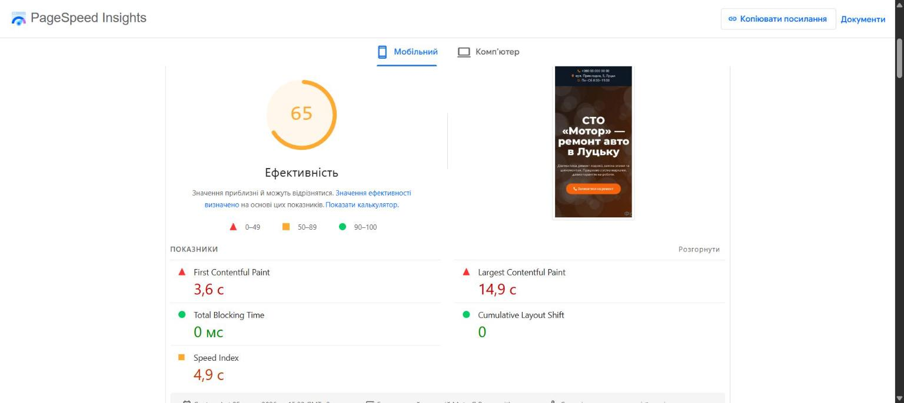
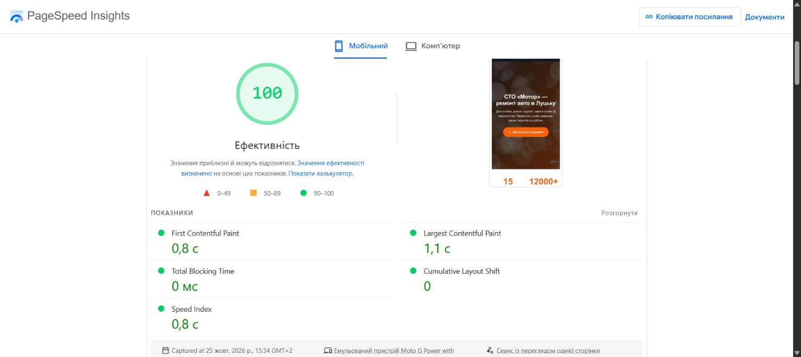

Результати PageSpeed Insights
| Показник | До, мобільний | Після, мобільний | До, комп’ютер | Після, комп’ютер |
|---|---|---|---|---|
| Ефективність | 65 | 100 | 81 | 100 |
| Largest Contentful Paint | 14,9 с | 1,1 с | 3,2 с | 0,3 с |
| First Contentful Paint | 3,6 с | 0,8 с | 0,8 с | 0,2 с |
| Speed Index | 4,9 с | 0,8 с | 1,1 с | 0,3 с |
| Total Blocking Time | 0 мс | 0 мс | 20 мс | 0 мс |
| Cumulative Layout Shift | 0 | 0 | 0 | 0 |


Що було не так і що зроблено
- Фото «з телефона» 4000×2667, по 4 МБ. Стиснув і зменшив до 800 і 1600 px (30–100 КБ), браузер сам обирає розмір під екран (
srcset). - Головне фото було CSS-фоном, тому браузер знаходив його пізно (LCP 14,9 с). Зробив звичайним
<img>зfetchpriority="high"і попереднім завантаженням. - 16 JS-файлів: jQuery, Swiper, скрипти Elementor, анімації. Прибрав увесь JavaScript: акордеон на
<details>, галерея гортається на CSS, лічильники — просто числа. - 19 CSS-файлів і Google Fonts. Один невеликий вбудований CSS і системні шрифти.
- Вбудована Google-карта завантажувала сотні кілобайтів. Замінив блоком з адресою і кнопкою «Відкрити в Google Maps».
- Фото нижче першого екрана тепер вантажаться лише при прокручуванні (
loading="lazy"), у всіх задані розміри, тож сторінка не «стрибає». - Бонус для локального SEO: розмітка
AutoRepair(Schema.org) з адресою і графіком.
Чесно про умови
Автосервіс вигаданий, фото — згенеровані заглушки з підписом «Фото: …». Сторінку «до» я зібрав сам у справжньому Elementor 4.3.5 на WordPress 7, як це роблять власники бізнесу, і опублікував статичну копію, щоб обидві сторінки заміряти однаково на GitHub Pages.
Обидві сторінки закриті від індексації (noindex), тому оцінка «SEO» в PageSpeed занижена в обох однаково. Результати PageSpeed трохи відрізняються від заміру до заміру.
Як зроблено: Claude Code (AI-асистент) для верстки й скриптів, локальний WordPress + Elementor для сторінки «до», Google PageSpeed Insights для замірів. Час — близько 3 годин.